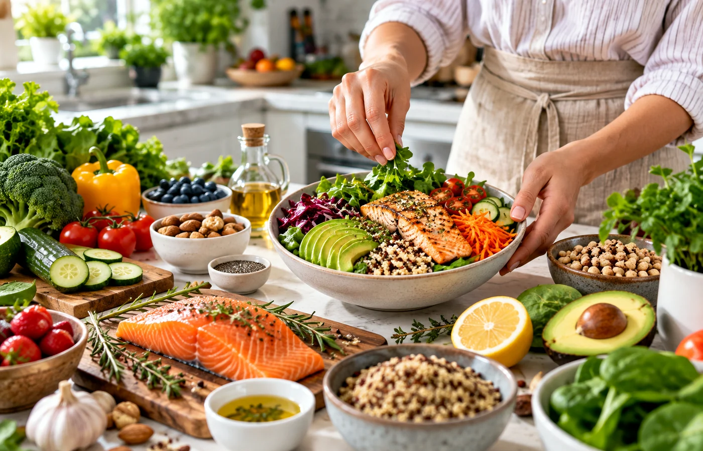

Protein + Fiber Meals: The Nutrition Combination Taking Over 2026

Quick overview
Protein + Fiber Meals: The Nutrition Combination Taking Over 2026 is easier to understand when it is explained clearly, connected to real-life habits, and separated from fear or hype. This Daily Vitality article breaks the topic into practical sections so readers can understand what it means, what may influence it, what habits are worth attention, and which signs deserve proper follow-up. The aim is to be useful, balanced and easy to return to later.
Because health topics can overlap, this page also points you toward related tools, product resources and similar reads. Nothing here is a diagnosis; it is educational guidance designed to help you ask better questions and make smarter everyday choices.
The big picture on protein + fiber meals
Protein + Fiber Meals: The Nutrition Combination Taking Over 2026 can sound complicated, but the topic becomes easier to understand when you break it into everyday questions: what it is, why it matters, what tends to make it better or worse, and which signs should not be ignored. In practical terms, protein + fiber meals connects with routines such as sleep, food quality, hydration, movement, stress and the ability to notice changes early.

Rather than chasing quick fixes, it usually helps to focus on consistent basics and a clear personal context. Daily basics that usually matter most include food quality, hydration, consistency, reasonable portions and not expecting one supplement or trend to fix everything. This article is educational and not a diagnosis, so any severe symptoms, sudden changes, alarming pain or concerns about medicines should always be discussed with a qualified clinician.
How it affects daily wellbeing
When people think about protein + fiber meals, they often focus only on symptoms, but the bigger story is function. A body system works best when the surrounding habits support it over time, and even small changes can matter when repeated consistently. That is why it helps to understand how this topic shows up in real life instead of looking at it as an isolated label.

Rather than chasing quick fixes, it usually helps to focus on consistent basics and a clear personal context. Daily basics that usually matter most include food quality, hydration, consistency, reasonable portions and not expecting one supplement or trend to fix everything. This article is educational and not a diagnosis, so any severe symptoms, sudden changes, alarming pain or concerns about medicines should always be discussed with a qualified clinician.
Common causes, patterns or myths
There is rarely one single cause behind protein + fiber meals. Genetics, environment, workload, age, lifestyle patterns, existing medical conditions and stress can all shape how symptoms appear. Online trends may oversimplify the issue, which is why a calmer, evidence-aware explanation can be more useful than viral health claims.
Rather than chasing quick fixes, it usually helps to focus on consistent basics and a clear personal context. Daily basics that usually matter most include food quality, hydration, consistency, reasonable portions and not expecting one supplement or trend to fix everything. This article is educational and not a diagnosis, so any severe symptoms, sudden changes, alarming pain or concerns about medicines should always be discussed with a qualified clinician.
Practical habits that may help
A practical approach works better than an extreme one. Start with two or three high-impact habits, keep them simple enough to repeat, and give them time. People often do best when they pair information with an action plan such as a hydration goal, walking target, sleep schedule, meal structure or symptom note.

Rather than chasing quick fixes, it usually helps to focus on consistent basics and a clear personal context. Daily basics that usually matter most include food quality, hydration, consistency, reasonable portions and not expecting one supplement or trend to fix everything. This article is educational and not a diagnosis, so any severe symptoms, sudden changes, alarming pain or concerns about medicines should always be discussed with a qualified clinician.
When to seek medical advice
Educational reading is useful, but it should not replace medical care when warning signs are present. If symptoms are intense, persistent, getting worse, interfering with daily life, or connected to dizziness, fainting, bleeding, chest pain, breathing trouble or unexplained weight change, professional evaluation matters.
Rather than chasing quick fixes, it usually helps to focus on consistent basics and a clear personal context. Daily basics that usually matter most include food quality, hydration, consistency, reasonable portions and not expecting one supplement or trend to fix everything. This article is educational and not a diagnosis, so any severe symptoms, sudden changes, alarming pain or concerns about medicines should always be discussed with a qualified clinician.
A realistic everyday plan
The goal is not perfection. The goal is understanding protein + fiber meals well enough to make better daily decisions. Clear information, steady routines and appropriate medical advice usually beat fear, confusion and random internet experimentation.
Rather than chasing quick fixes, it usually helps to focus on consistent basics and a clear personal context. Daily basics that usually matter most include food quality, hydration, consistency, reasonable portions and not expecting one supplement or trend to fix everything. This article is educational and not a diagnosis, so any severe symptoms, sudden changes, alarming pain or concerns about medicines should always be discussed with a qualified clinician.
Helpful wellness tools
Use these tools to turn information into simple daily action.
Recommended resources
Go deeper with Daily Vitality digital resources and guides.
Related reads
Continue with more articles in the same or closely related category.
Daily Vitality note
Good health content should reduce confusion, not increase it. If symptoms are severe, persistent, new, rapidly changing, or linked with chest pain, breathing trouble, fainting, confusion, serious bleeding or dehydration, please seek professional medical care promptly.